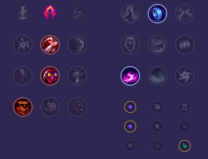

Starter: Pierścień Dorana Mikstura Zdrowia Core Bulid: Różdżka Wieków Buty Prędkości Kostur Archanioła Full Bulid: Kryształowy Kostur Rylai Udręka Liandriego Zabójczy Kapelusz Rabadona

Słaby przeciwko: - Veigar - Syndra - Xerath - Lux - Naafiri - Fizz Dobry przeciwko: - Sylas - Yone i Yasuo - Ryze - Katarina - Aurora - Akshan